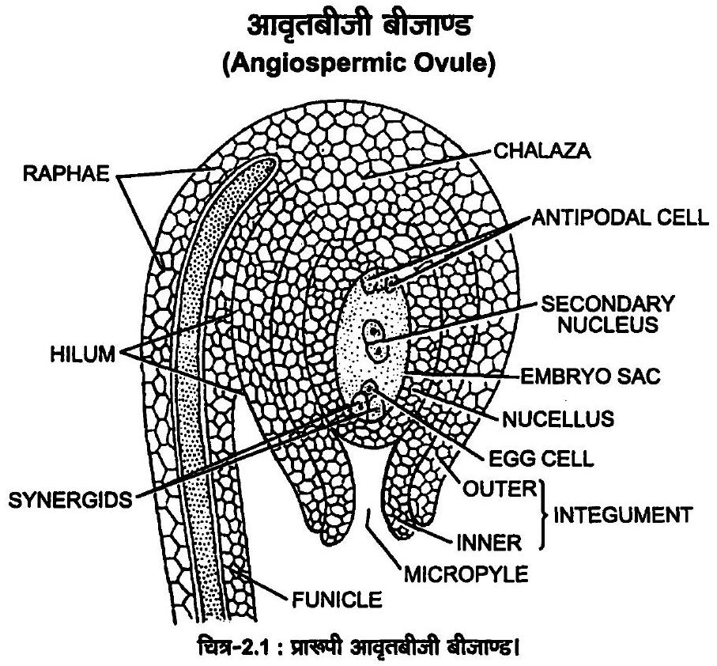
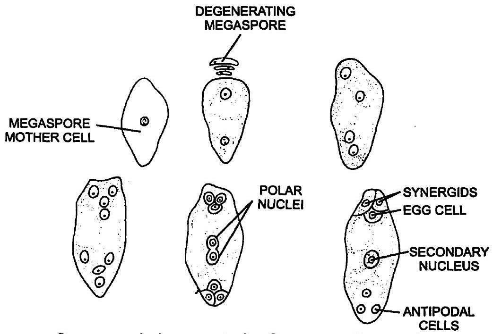
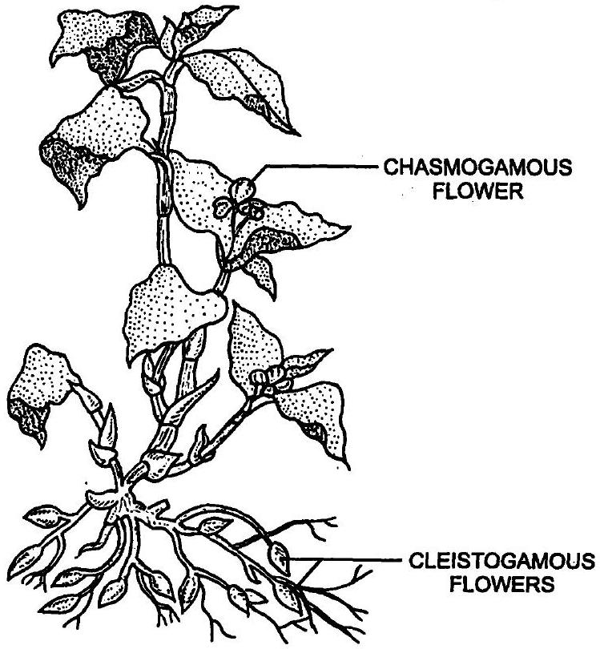

एक आवृतबीजी पुष्प के उन अंगों के नाम बताएँ; जहाँ नर एवं मादा युग्मकोद्भिद का विकास होता है?
लघुबीजाणुधानी तथा गुरूबीजाणुधानी के बीच अंतर स्पष्ट करें? इन घटनाओं के दौरान किस प्रकार का कोशिका विभाजन संपन्न होता है? इन दोनों घटनाओं के अंत में बनने वाली संरचनाओं के नाम बताएँ?
| क्र० सं० | लघुबीजाणुधानी (Microsporangium) | गुरुबीजाणुधानी (Megasporangium) |
|---|---|---|
| 1. | लघुबीजाणुधानी पुंकेसर के परागकोश (anther) में विकसित होती है। इनका विकास परागकोश के चारों कोनों पर होता है। | गुरुबीजाणुधानी अण्डप के अण्डाशय में जरायु से विकसित होती है। इन्हें सामान्यत: बीजाण्ड कहते हैं। |
| 2. | लघुबीजाणुधानी चारों ओर से बाह्य त्वचा, अन्त:स्तर, मध्य स्तर तथा टेपीटम (tapetum) से घिरी होती है। | गुरुबीजाणुधानी (बीजाण्ड) चारों ओर से बाह्य तथा अन्त:अध्यावरण (integument) से घिरी होती है। |
| 3. | अनेक लघुबीजाणु मातृ कोशिकाओं से अर्द्धसूत्री विभाजन द्वारा असंख्य लघु बीजाणु (परागकण) बनते हैं। | एकमात्र गुरुबीजाणु मातृ कोशिका से अर्द्धसूत्री विभाजन द्वारा चार अगुणित गुरुबीजाणु (megaspores) बनते हैं। इनमें से तीन नष्ट हो जाते हैं, एक गुरुबीजाणु क्रियाशील रहता है। |
| 4. | लघुबीजाणु (परागकण) रेखीय (linear), चतुष्क (tetrad), T-आकार में अथवा क्राँसित (decussate) चतुष्क के रूप में व्यवस्थित होता है। | गुरुबीजाणु रेखीय क्रम में व्यवस्थित होते हैं। |
| 5. | लघुबीजाणु (परागकण) परागकोश के स्फुटन से मुक्त हो जाते हैं। ये पौधों के नर युग्मकोद्भिद होते हैं। इसमें नर युग्मक बनते हैं। | गुरुबीजाणु वृद्धि करके भ्रूणकोष (embryo sac) बनाते हैं। यह मादा युग्मकोद्भिद कहलाता है। इसमें मादा युग्मक (अण्ड कोशिका) बनता है। |
निम्नलिखित शब्दावलियों को सही विकासीय क्रम में व्यवस्थित करें- परागकण, बीजाणुजन ऊतक, लघुबीजाणुचतुष्क, परागमातृ कोशिका, नर युग्मक
एक प्ररूपी आवृतबीजी बीजांड के भागों का विवरण दिखाते हुए एक स्पष्ट एवं साफ सुथरा नामांकित चित्र बनाएँ।

आप मादा युग्मकोद्भिद् के एकबीजाणुज विकास से क्या समझते हैं?
एक स्पष्ट एवं साफ सुथरे चित्र के द्वारा परिपक्व मादा युग्मकोद्भिद के 7-कोशीय, 8-न्युकिलयेट (केंद्रक) प्रकृति की व्याख्या करें।

उन्मील परागणी पुष्पों से क्या तात्पर्य है? क्या अनुन्मीलिय पुष्पों में परपरागण संपन्न होता है? अपने उत्तर की सतर्क व्याख्या करें?

पुष्पों द्वारा स्व-परागण रोकने के लिए विकसित की गई दो कार्यनीति का विवरण दें।
स्व अयोग्यता क्या है? स्व-अयोग्यता वाली प्रजातियों में स्व-परागण प्रक्रिया बीज की रचना तक क्यों नहीं पहुँच पाती है?
बैगिंग (बोरावस्त्रावरण) या थैली लगाना तकनीक क्या है? पादप जनन कार्यक्रम में यह कैसे उपयोगी है?
त्रि-संलयन क्या है? यह कहाँ और कैसे संपन्न होता है? त्रि-संलयन में सम्मिलित न्युक्लीआई का नाम बताएँ।
एक निषेचित बीजांड में; युग्मनज प्रसुप्ति के बारे में आप क्या सोचते हैं?
इनमें विभेद करें-
बीजपत्राधार और बीजपत्रोपरिक
| क्र०सं० | बीजपत्राधार (Hypocotyl) | बीजपत्रोपरिक (Epicotyl) |
|---|---|---|
| 1. | भ्रूण के बीजाक्ष (tigellum) का वह भाग जो बीजपत्र तथा मूलांकुर के मध्य स्थित होता है, बीजपत्राधार कहलाता है। | भ्रूण के बीजाक्ष का वह भाग जो बीजपत्र तथा प्रांकुर के मध्य स्थित होता है, बीजपत्रोपरिक कहलाता है। |
| 2. | बीज के अंकुरण के समय बीजपत्राधार में तीव्र वृद्धि के कारण बीजपत्र मृदा से ऊपर आ जाते हैं; जैसे-अरण्डी, सेम आदि में। | बीज के अंकुरण के समय बीजपत्रोपरिक में तीव्र वृद्धि होने के कारण बीजपत्र मृदा में ही रह जाते हैं; जैसे-चना, मक्का आदि में। |
प्राँकुर चोल तथा मूलाँकुर चोल
| क्र०सं० | प्रांकुर चोल (Coleoptile) | मूलांकुर चोल (Coleorrhiza) |
|---|---|---|
| 1. | एकबीजपत्रीय भ्रूणीय अक्ष से बीजपत्र (स्कुटेलम) के जुड़ाव स्थल से ऊपर, भ्रूणीय अक्ष का बीजपत्रोपरिक (epicotyl) तथा प्ररोह शीर्ष कुछ आद्यपर्णों (primitive leaves) से आवृत होता है। यह खोखली पर्णीय संरचना होती है। इसे प्रांकुर चोल (coleoptile) कहते हैं। | एकबीजपत्रीय भ्रूणीय अक्ष से बीजपत्र (स्कुटेलम) के जुड़ाव स्थल से नीचे भ्रूणीय अक्ष का बीजपत्राधार तथा मूलांकुर शीर्ष अविभेदित आवरण से आवृत होता है। इसे मूलांकुर चोल (coleorrhiza) कहते हैं। |
| 2. | यह प्रांकुर की सुरक्षा करता है। | यह मूलांकुर की सुरक्षा करता है। |
अध्यावरण तथा बीजचोल
| अध्यावरण (Integument) | बीजचोल (Testa) |
|---|---|
| बीजाण्ड (ovule) बीजाण्डद्वार (micropyle) को छोड़कर चारों ओर से एक या दो रक्षात्मक आवरण से घिरा होता है। इसे अध्यावरण कहते हैं। यह बीजाण्ड की सुरक्षा करता है। अध्यावरण निषेचन के बाद बीजचोल में परिवर्तित हो जाता है। | बीज चारों ओर से बीजावरण (seed coat) से घिरा होता है। यह सामान्यतया दो पर्तों से बना होता है-बाह्य आवरण दृढ़ एवं रक्षात्मक होता है, इसे बीजचोल (testa) कहते हैं। आन्तरिक स्तर पतला होता है, इसे अन्त:कवच (tegmen) कहते हैं। |
परिभ्रूण पोष एवं फल भित्ति
| परिभ्रूणपोष (Perisperm) | फलभित्ति (Pericarp) |
|---|---|
| कुछ बीजों में बीजाण्ड का बीजाण्डकाय (nucellus) एक पतले आवरण के रूप में बचा रह जाता है, इसे परिभ्रूणपोष कहते हैं; जैसे-कुमुदिनी, काली मिर्च, चुकन्दर आदि में। | निषेचन के बाद अण्डाशय से फलभित्ति (pericarp) का निर्माण होता है। बीज तथा फलभित्ति मिलकर फल कहलाते हैं। शुष्क फलों में फलभित्ति प्राय: शुष्क एवं एक पर्त से बनी होती है, जबकि सरस फलों में यह मांसल तथा तीन पर्तों से बनी होती है। |
एक सेव को आभासी फल क्यों कहते हैं? पुष्प का कौन सा भाग फल की रचना करता है।
विपुंसन से क्या तात्पर्य है? एक पादप प्रजनक कब और क्यों इस तकनीक का प्रयोग करता है?
यदि कोई व्यक्ति वृद्धिकारकों का प्रयोग करते हुए अनिषेकजनन को प्रेरित करता है तो आप प्रेरित अनिषेक जनन के लिए कौन सा फल चुनते और क्यों?
परागकण भित्ति रचना में टेपीटम की भूमिका की व्याख्या करें।
असंगजनन क्या है और इसका क्या महत्त्व है?